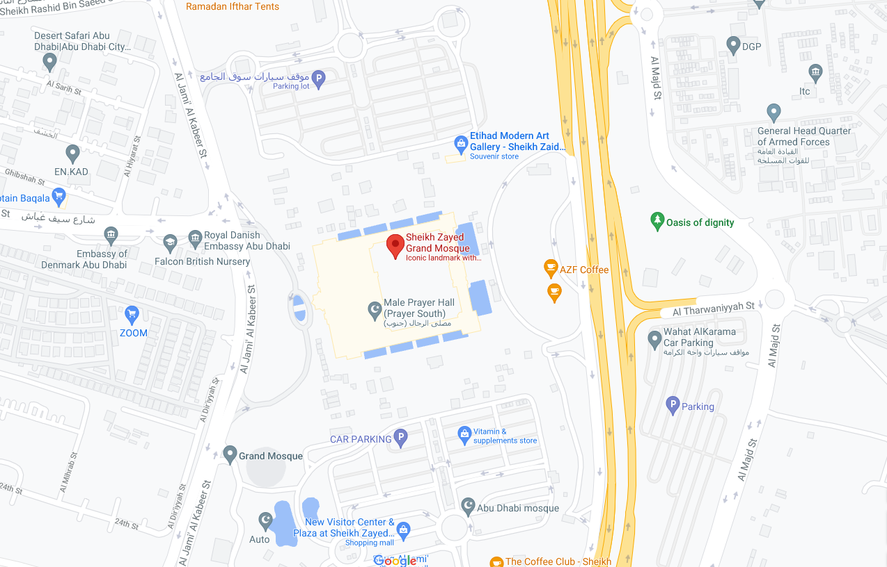
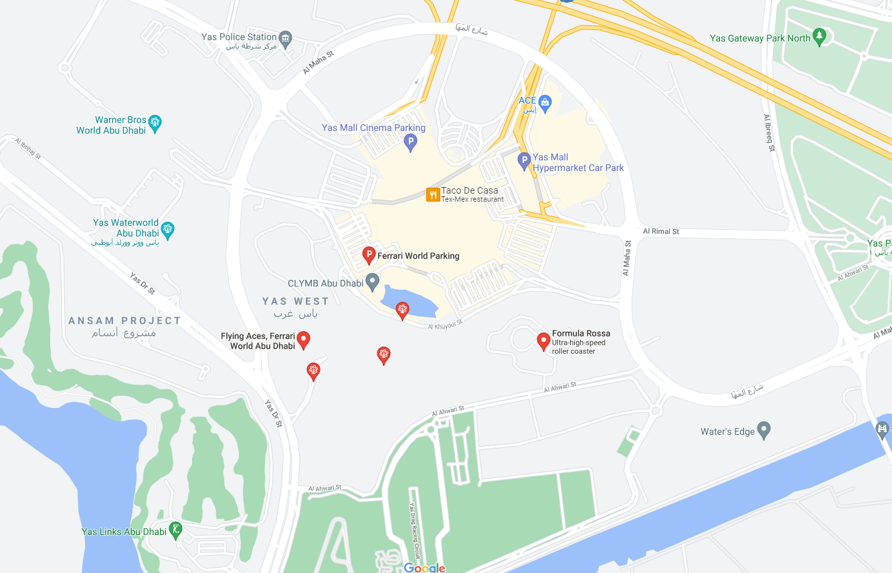
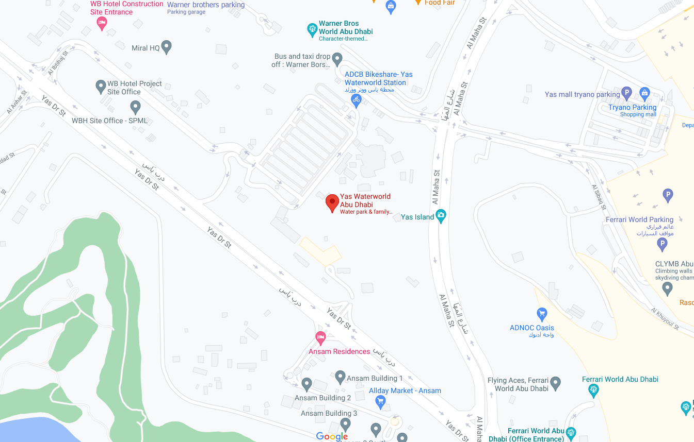
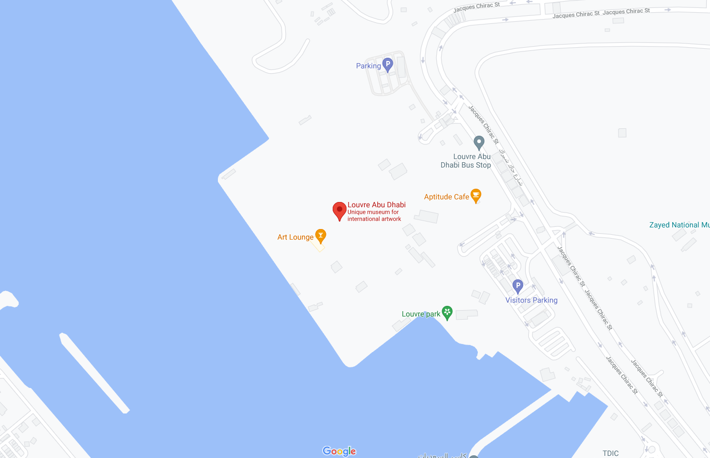

Welcome to Abu Dhabi

Sheikh Zayed Mosque
Ferrari World
Yas Water Park
Grand Mosque was constructed between 1996 and 2007. It was designed by Syrian architect Yousef Abdelky. The building complex measures approximately 290 by 420 m (950 by 1,380 ft), covering an area of more than 12 hectares (30 acres), excluding exterior landscaping and vehicle parking. The main axis of the building is rotated about 11° south of true west, aligning it in the direction of the Kaaba in Mecca, Saudi Arabia.

World Abu Dhabi is a mostly indoors amusement park on Yas Island in Abu Dhabi, United Arab Emirates. It is the first Ferrari-branded theme park and has the record for the largest space frame structure ever built. Formula Rossa, the world's fastest roller coaster, is also located here. The foundation stone for the park was laid on 3 November 2007. It took three years to develop the park and it officially opened to the public on 4 November 2010.
Yas Waterworld Abu Dhabi (Arabic: ياس وتروورلد أبوظبي) is an Emirati-themed waterpark located on Yas Island in Abu Dhabi, United Arab Emirates, the park is home to more than 40 rides, slides and attractions, including Bubble’s Barrel, Rush Rider, and Bandit Bomber which is the longest suspended roller coaster in the Middle East over 550 metres long.
The Louvre Abu Dhabi is the result of an unprecedented initiative that laid the groundwork for a new type of cultural collaboration of unparalleled scope between two countries, centered on the creation of a national institution. Born out of an intergovernmental agreement signed on March 6, 2007, between the United Arab Emirates and France, the Louvre Abu Dhabi is the first universal museum in the Arab world. Built on Saadiyat Island (the island of happiness), a natural 27-km² island a third of the size of Paris, the Cultural District houses a number of renowned cultural establishments: the Louvre Abu Dhabi, designed by architect Jean Nouvel; the Zayed National Museum by Norman Foster; and the Guggenheim Abu Dhabi by Frank Gehry. The Cultural District is part of a new urban complex just outside the historic Abu Dhabi city center, with housing for 150,000 residents.
